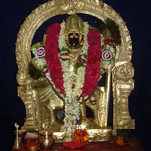
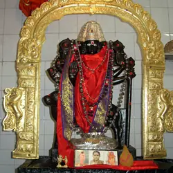
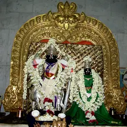
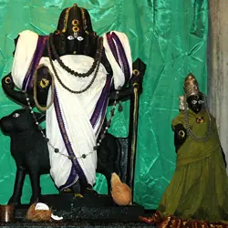
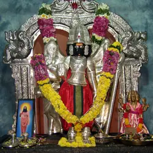
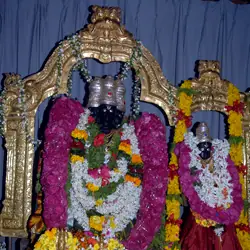
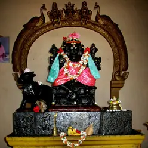
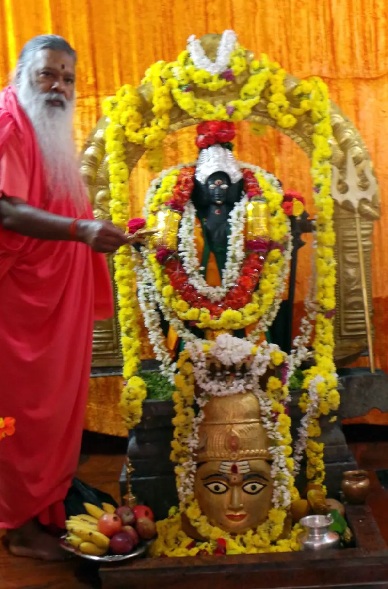
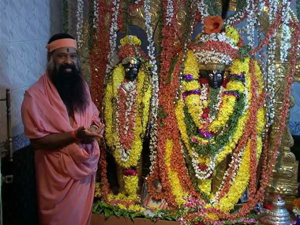

From Mysuru to the world
From the Ashram at the foot of Chamundi Hill, Sri Swamiji’s mission reaches sixteen Datta Kshetras, nine Navanatha Kshetras and Ashram centres in twelve countries.
From the foot of Chamundi Hill to twelve countries
Avadhoota Datta Peetham in Mysuru is the headquarters of Sri Swamiji’s mission. Over 80 branches have been consecrated across India, including sixteen Ashrams for the sixteen incarnations of Lord Dattatreya, Datta Kashi, Datta Rameshwaram and nine Kshetras dedicated to the Navanathas.
Sri Swamiji’s first foreign tour was in 1976. Today the Peetham’s directory lists Datta Yoga Centres, temples and Ashrams in eleven countries beyond India, from Trinidad to New Zealand.
- 16
- Shodasha Datta Kshetras
- 9
- Navanatha Kshetras
- 92
- centres in the official directory
- 12
- countries with centres
Counts from dattapeetham.org: the Shodasha and Navanatha Kshetra pages and the Ashram Centres directory.
Golden threads from Mysuru
The Peetham’s directory lists centres in eleven countries beyond India. Choose a country to trace its thread from the Ashram.
11 countries beyond India. Choose one to trace its thread.
Moments from the journeys

Bhagavad Gita chanting On 20 July 2024, 8,000 people recited the entire Bhagavad Gita in a single venue, led by Sri Swamiji. 
Music for Healing & Meditation in a cave Sri Swamiji’s first ever music for healing and meditation at a cave. Sydney Opera House concert Pictured on the Peetham’s pages with Sri Swamiji’s Guinness World Record for the largest music therapy lesson.
A few of Sri Swamiji’s concert halls abroad
- Royal Albert Hall, London
- The Lincoln Center, New York
- Carnegie Hall, New York
- Chicago Symphony Orchestra Hall
- Kennedy Center, Washington, DC
- Sydney Opera House
- The Esplanade, Singapore
- Dubai Opera House
- Dalian International Center, China
- Westminster Hall, London
- Tonhalle, Zurich
- KKL Luzern
- The Lyric Theatre, Johannesburg
Sixteen shrines for the sixteen manifestations of Lord Datta
Sri Swamiji has consecrated sixteen Datta Shrines, the Shodasha Datta Kshetras, representing the sixteen manifestations of Lord Datta, in different parts of India. The first, Kaalaagni Shamana Dattatreya, is in the main Ashrama at the foot of Chamundi Hill in Mysuru.
-
-

2. Yogiraja Vallabha Dattatreya
Proddatur, Andhra Pradesh
-
3. Datta Yogiraja
Bengaluru, Karnataka
-
4. Gnaana Saagara Dattatreya
Anantapur, Andhra Pradesh
-
5. Shyamakamala Lochana Dattatreya
Vijayawada, Andhra Pradesh
-
6. Atri Varada Dattatreya
Machilipatnam, Andhra Pradesh
-

7. Samskaara Heena Shivaroopa Dattatreya
Jayalakshmipuram, Andhra Pradesh
-

8. Aadi Guru Dattatreya
Chennai, Tamil Nadu
-
9. Digambara Datta
Rishikesh, Uttarakhand
-

10. Vishwambaravadhoota Dattatreya
Akividu, Andhra Pradesh
-
11. Deva Deva Dattatreya
Nuzvid, Andhra Pradesh
-

12. Dattavadhoota
Hyderabad, Telangana
-

13. Datta Digambara
Gandigunta, Andhra Pradesh
-
14. Siddha Raja Dattatreya
Kochi, Kerala
-

15. Maaya Mukta Avadhoota Dattatreya
Acharapakkam, Tamil Nadu
-
16. Leela Vishwambhara Dattatreya
Surat, Gujarat
Each Kshetra opens its page on dattapeetham.org, with its history, address and contacts. See the full Shodasha grid.
Datta Kashi & Datta Rameshwaram

Datta Kashi
Mekedatu, Kanakapura Taluk, Karnataka
Picturesque Mekedatu is near Brahma Kundam, where Sri Swamiji was born, amidst the Sahyadri hills at the confluence of three rivers, near the Sangameswara temple. A Siva Lingam found at the spot where Sri Swamiji’s home stood gave the Ashram the name Datta Kashi.
- Datta idol installed
- 29 October 1988
- Three rivers
- Kaveri, Arkavati, Guptagamini
- Also enshrined
- Panchamukha Anjaneya, Ganapathy, Vana Durga, Sadguru Padukas

Datta Rameshwaram
Manginapudi, Machilipatnam, Andhra Pradesh
To protect Manginapudi (Tallapalem) from severe cyclones and strong tidal waves, Sri Swamiji consecrated Lord Dattatreya at the seaside temple of Lord Nagareswara in 1991, and had twelve wells dug, each with healing waters of different constituents. A bath at these medicinal wells destroys sins; hence the name Datta Rameswaram.
The twelve wells
- Audumbara
- Amalaka
- Nirvindhya
- Padma
- Sarva
- Unmochana
- Pampa
- Mata Jayalakshmi
- Narahari
- Sri Ganapathy Sachchidananda
- Sri Datta
- Anagha
Find a centre near you
Ashrams, Datta Yoga Centres, temples and satsang groups from the Peetham’s directory, grouped here by country and, within India, by state or territory. Open a centre for its full address, map and programmes.
A partial list. 86 of the 92 centres in the official directory are shown here, with contacts as published. Please confirm timings with the centre before you visit, and see the official Ashram Centres directory for the complete, current list.
India64 centres in 8 states and Delhi
Andhra Pradesh
33 centres
Addanki · Ahobilam · Akividu · Anantapur · Badampudi · Bhimavaram · Cherukuwada · Chirala · Cuddapah · Eluru · Gannavaram · Guntur · Jangareddy Gudem · Jayalakshmipuram · Kadiri · Kaikaluru · Kurnool · Machilipatnam · Madanapalle · Nellore · Nuzvidu · Ongole · Pithapuram · Proddatur · Rajahmundry · Rajanagaram · Srikakulam · Srisailam · Vijayawada · Visakapatnam · Vuyyuru
- Datta Dhanvantari Paduka Kshetram, Addanki Addanki Contact via the centre’s page
- Jaya Durga Teertham, Vijayawada Vijayawada Contact via the centre’s page
- Sri Datta Paduka Kshetram, Cherukuwada Cherukuwada 95810 42585
- Sri Ganapathi Sachchidananda Ashrama, Jangareddy Gudem Jangareddy Gudem Contact via the centre’s page
- Sri Ganapathi Sachchidananda Ashrama, Kadiri Kadiri Contact via the centre’s page
- Sri Ganapathi Sachchidananda Ashrama, Ongole Ongole Contact via the centre’s page
- Sri Ganapathy Sachchidananda Ashrama, Ahobilam Ahobilam Contact via the centre’s page
- Sri Ganapathy Sachchidananda Ashrama, Akividu Akividu 98850 31189vishwambaradatta@gmail.com
- Sri Ganapathy Sachchidananda Ashrama, Anantapur Anantapur 9848668456anantapur.sgs.04@gmail.com
- Sri Ganapathy Sachchidananda Ashrama, Badampudi Badampudi, West Godavari 94407 1009208818 288133sr_kalavacharla2002@yahoo.com
- Sri Ganapathy Sachchidananda Ashrama, Bhimavaram Bhimavaram 08816 222520raoanandsharma@gmail.com
- Sri Ganapathy Sachchidananda Ashrama, Chirala Chirala 0821 2486 486venkateswararaoaduri9@gmail.com
- Sri Ganapathy Sachchidananda Ashrama, Guntur Guntur 0863 - 2512370093465-14546mail@dattapeetham.com
- Sri Ganapathy Sachchidananda Ashrama, Jayalakshmipuram Jayalakshmipuram 08554-562319704034016mail@dattapeetham.com
- Sri Ganapathy Sachchidananda Ashrama, Kaikaluru Kaikaluru 9059989977dattasramkklr@gmail.com
- Sri Ganapathy Sachchidananda Ashrama, Kurnool Kurnool 088961 23777kurnool.sgs@gmail.com
- Sri Ganapathy Sachchidananda Ashrama, Madanapalle Madanapalle 99633 73399anaghastami@gmail.com
- Sri Ganapathy Sachchidananda Ashrama, Nuzuvidu Nuzvidu 9247297079mail@dattapeetham.com
- Sri Ganapathy Sachchidananda Ashrama, Proddatur Proddatur 9880455779dattapeetham.pdtr@gmail.com
- Sri Ganapathy Sachchidananda Ashrama, Rajahmundry Rajahmundry +91 (0821) 2486 486097042 91249mail@dattapeetham.com
- Sri Ganapathy Sachchidananda Ashrama, Rajanagaram Rajanagaram (Rajamundry) Contact via the centre’s page
- Sri Ganapathy Sachchidananda Ashrama, Srisailam Srisailam 8332821988
- Sri Ganapathy Sachchidananda Ashrama, Visakapatnam Visakapatnam +91-9949776677chintamaniganapativizag@gmail.com
- Sri Ganapathy Sachchidananda Datta Rameswaram, Manginapudi Machilipatnam 098481-53721mail@dattapeetham.com
- Sri Ganapathy Sachchidananda Dattashramam, Machilipatnam Machilipatnam 9491248245sridattaashramam@gmail.com
- Sri Ganapati Sachchidananda Ashrama, Vijayawada Vijayawada 0866-5555419550777555marakatarajeswari@gmail.com
- Sri Ganapati Sachchidananda Gnana Bodha Sabha, Gandi Gunta Vuyyuru +91 (0821) 2486 486mail@dattapeetham.com
- Sri Ganapati Sachchidananda Gnana Bodha Sabha, Gannavaram Gannavaram +91 (0821) 2486 486mail@dattapeetham.com
- Sri Ganapati Sachchidananda Gnana Bodha Sabha, Srikakulam Srikakulam +91 (0821) 2486 486mail@dattapeetham.com
- Sri Ganapati Sachchidananda Gnana Bodha Satsanga Sabha, Eluru Eluru Contact via the centre’s page
- Sri Ganapati Sachchidananda Trust, Cuddapah (Kadapa) Cuddapah mail@dattapeetham.com
- Sri Jayalakshmi Matha Mathru Mandali, Nellore Nellore 0861-2323696mail@dattapeetham.com
- Sri Paada Vallabha Anagha Datta Kshetram, Pithapuram Pithapuram 062814 15422
Telangana
11 centres
Hyderabad · Kamareddy · Nizamabad · Palamuru · Warangal
- Panchamukha Anjaneya Swami Temple, BHEL, Hyderabad Hyderabad (BHEL) 9701533359panchamukhaanjaneyaswami@gmail.com
- Sri Anagha Datta Kendram, BDL, Hyderabad Hyderabad 9492913800srianaghadattakendram@gmail.com
- Sri Ganapathy Sachchidananda Ashrama, Chinakodepaka Warangal Contact via the centre’s page
- Sri Ganapathy Sachchidananda Ashrama, Datta Giri, Hyderabad Hyderabad 9394548157mail@dattapeetham.com
- Sri Ganapathy Sachchidananda Ashrama, Kamareddy Kamareddy 9959907117llrao0009@gmail.com
- Sri Ganapathy Sachchidananda Datta Gnana Bodha Sabha, Palamuru Palamuru 6281992207palamurusgsashram@gmail.com
- Sri Ganapati Sachchidananda Ashrama, Dundigul, Hyderabad Hyderabad 98490254709849030060hyderabad@sgsashrama.org
- Sri Rajarajeshwari Shakti Panchayatana Temple, Indresham, Hyderabad Hyderabad 9493660011
- Sri Varada Datta Kshetram, Warangal Warangal Contact via the centre’s page
- Sri Vishnu Datta Kshetram, Janwada, Hyderabad Hyderabad 98497 92681
- Uttara Tirupati Temple, Nizamabad Nizamabad 93987 44560utkinduru@gmail.com
Karnataka
8 centres
Bellary · Bengaluru · Ganagapura · Kanakapura · Krishnaraja Raga Sagara · Mysuru · Shivamogga · Sogala
- Avadhoota Datta Peetham, Mysuru Mysuru (0821) 2486486mail@dattapeetham.com
- Sri Ganapathi Sachchidananda Ashrama, Bengaluru Bengaluru 97390427419886030134mail@sgsbangalore.com
- Sri Ganapathy Sachchidananda Ashrama, Bellary Bellary (Ballari) Contact via the centre’s page
- Sri Ganapathy Sachchidananda Ashrama, Ganagapura Ganagapura 08470-2744297411308344ramasarma.rjy@gmail.com
- Sri Ganapathy Sachchidananda Ashrama, Shivamogga Shivamogga Contact via the centre’s page
- Sri Ganapati Sachchidananda Ashram, Sangama (Mekedatu) Kanakapura +91 832 850 7849+91 98808 59797contact@sgsmekedatu.org
- Sri Jayalakshmi Mata Dhyana Mandira, Sogala Sogala 0821 2486 486mail@dattapeetham.com
- Sri Raghavendra Paduka Kshetra, K R Nagar Krishnaraja Raga Sagara Contact via the centre’s page
Uttarakhand
3 centres
Badrinath · Haridwar · Rishikesh
- Sri Ganapathi Sachchidananda Ashrama, Badrinath Badrinath 0821 2486486mail@dattapeetham.com
- Sri Ganapathy Sachchidananda Ashrama, Bhadra Kali Peetha, Haridwar Haridwar 81062 99000mail@dattapeetham.com
- Sri Ganapathy Sachchidananda Ashrama, Rishikesh Rishikesh 95152 9328695152 93287mail@dattapeetham.com
Delhi
2 centres
Delhi · New Delhi
Gujarat
2 centres
Surat · Vadodara
Tamil Nadu
2 centres
Achcharapakkam · Chennai
Uttar Pradesh
2 centres
Ayodhya · Varanasi
- Sri Ganapathi Sachchidananda Ashrama, Varanasi (Kashi) Varanasi (Kashi) Contact via the centre’s page
- Sri Ganapathy Sachchidananda Ashrama, Ayodhya Ayodhya Contact via the centre’s page
Kerala
1 centre
Cochin
Outside India22 centres in 11 countries
United States9 centres
Baton Rouge · Burlington · Chicago · Clarksburg · Fremont · Frisco · Houston · West Sunbury
- Datta Temple, Baton Rouge Baton Rouge, Louisiana +1 225-751-8949support@dattatemple.org
- Hanuman Datta Yoga Center (HDYC), Houston Houston, Texas 704-3056275secretary@hdyc.org
- Jayalakshmi Datta Yoga Center (JDYC), Maryland Clarksburg, Maryland +1 301-540-2429info@jayalakshmidyc.org
- Jesus Datta Retreat Center (JDRC), West Sunbury West Sunbury, Pennsylvania (724)-637-3169retreatdrc@gmail.com
- Karya Siddhi Hanuman Temple (KSHT), Fremont Fremont, California +1 (510) 673 3929gssmap@hotmail.com
- Karya Siddhi Hanuman Temple (KSHT), Frisco Frisco, Texas (866) 996 - 6767support@dallashanuman.org
- SGS Karya Siddhi Hanuman Mandir Burlington, New Jersey +1 609-526-5815mail@sgshanumanmandir.org
- Sri Ganapathy Sachchidananda Datta Yoga Center (SGS DYC), New Jersey Burlington, New Jersey +1 609-526-5815service@sgsdyc.org
- Trinity Datta Yoga Center (TDYC), Chicago Chicago, Illinois +1 312 680-0630feedback@trinitydyc.org
Trinidad and Tobago4 centres
Aripo · Carapichaima · Penal · Princes Town
- Aripo Datta Ganga, Trinidad Aripo, St. Andrews +1 868-684-7481arramnarine@gmail.com
- Datta Shiva Rama Temple, Princes Town, Trinidad Princes Town, Victoria +1 868-688-3367+1 868-359-2208vishnuramdatt@yahoo.com
- Sri Dattatreya Yoga Center, Carapichaima, Trinidad Carapichaima, Carony +1 (868)-233-1428mail@sdyctt.com
- Sri Sachchidananda Yoga Ashrama, Penal, Trinidad Penal, Victoria +1 (868) - 682 - 4032penalssya@gmail.com
Australia1 centre
Melbourne
- Datta Yoga Centre, Australia Melbourne, Victoria +61412860760enquiry.dycaustralia@gmail.com
Canada1 centre
Erin
- Datta Yoga Center, Canada Erin, Ontario +1 416-587-1577info@dyccanada.org
Germany1 centre
Dusseldorf
- Datta Yoga Center Germany e.V. Dusseldorf, North Rhine-Westphalia +49 211 40 28 13mail@dycgermany.de
Malaysia1 centre
Kuala Lumpur
- Gnana Bodha Sabha, Malaysia Kuala Lumpur, Selangor +60 12 3242659+60 19 288 7534info@gbsmalaysia.org
Netherlands1 centre
Netherlands
New Zealand1 centre
Papakura
- Datta Yoga Center, New Zealand Papakura, Auckland +64211498523enquiry.dycnz@gmail.com
Switzerland1 centre
Zurich
- Datta Yoga Centre, Switzerland Zurich, Kanton Zurich +41 (0) 79 671 34 55+41 (0) 76 531 91 93dycs@dyc.ch
United Arab Emirates1 centre
Dubai
- Sri Ganapathy Sachchidananda Ashrama, Dubai Dubai, Emirate of Dubai +971 50 545 1156kumarksn@gmail.com
United Kingdom1 centre
Brentford
- Datta Yoga Centre, United Kingdom Brentford, Middlesex +44 7466 334961mail@dycuk.org
No centre in this list matches. The official directory holds all 92.

Avadhoota Datta Peetham, Mysuru
Popularly called Sri Ganapathy Sachchidananda Ashram, the Peetham is situated on a sprawling 40-acre site at the foot of Chamundi Hill, in the royal city of Mysuru. This is the headquarters of Sri Swamiji’s mission.
Here one can study Yoga, the Vedas and Sanskrit, bhajans and music, and in the Universal Prayer Hall traditional Pujas and Homas are performed. The first of the sixteen Datta Kshetras stands here, the temple the Peetham calls the primordial and central seat of Datta Peetham’s global reach.
- 40
- acres at the foot of Chamundi Hill
- 1966
- the Ashram is established at Mysuru
- 16
- lamps of the evening Kakada Arati
- 1978
Lord Datta descends. In a week-long ceremony from 4 to 11 June, Lord Datta was installed as Sri Kaalaagni Shamana Dattatreya on 9 June. A stage called Saraswati Peetha, sometimes Narayana Peetha, once stood here; after the Datta Temple was built, the Ashrama began to be called Avadhoota Datta Peetham. That week Sri Swamiji introduced Datta worship, the Datta Stava and the greeting Jaya Guru Deva Datta, which became Jaya Guru Datta in the mid-eighties.
- 1984
The Universal Prayer Hall is unveiled. Every evening devotees gather here for Divya Naama Sankeertana and the Kakada Arati, lighting sixteen lamps before Lord Datta.
- 2002
Re-consecration. On Rama Navami, 21 April 2002, the idol of Lord Datta was relocated to the centre of the Prayer Hall and re-consecrated.
- AddressSri Ganapathy Sachchidananda Ashram
Datta Nagar, Ooty Road
Mysuru, Karnataka 570 025, India - Phone+91 (0821) 2486 486
- Emailmail@dattapeetham.com
Come to the Mysuru Ashram
Plan a pilgrimage to the headquarters of Sri Swamiji’s mission, or offer a puja online from wherever you are.